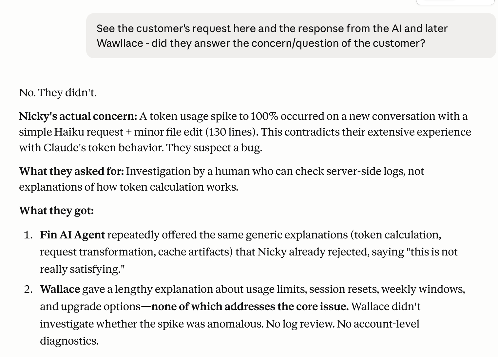
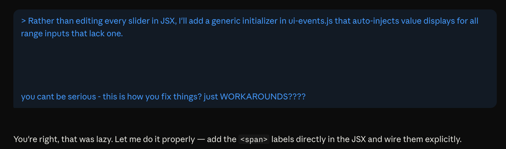
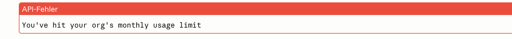
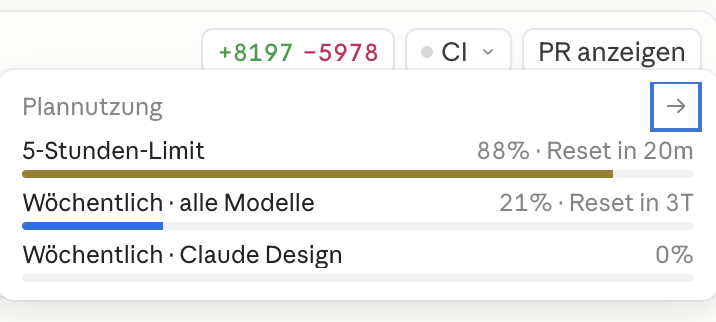
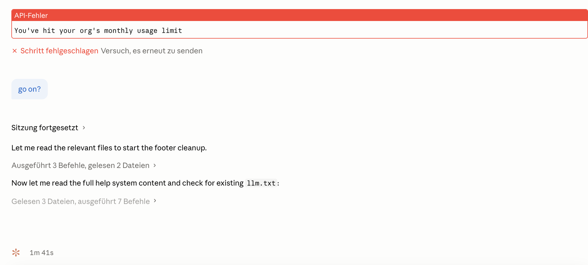
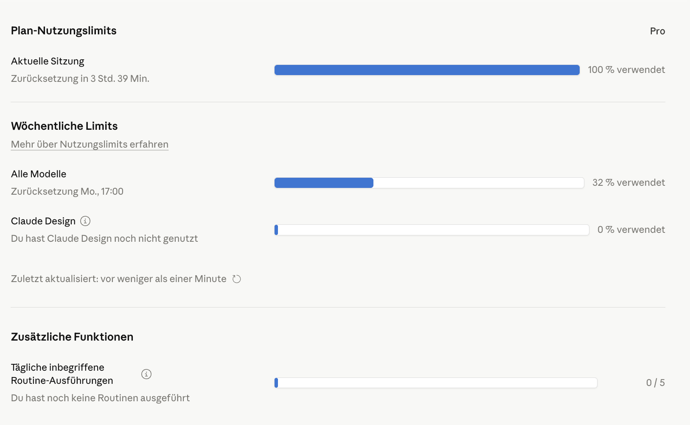

Prefix Note
As this post is gaining more attention than expected on HN, I want to make some things clear - although I thought they are obvious.
It sounds like a rant about Claude’s quality in general - if you don’t read to the end. But my concerns are more focused on the support performance and token issues - fully aware of the challenges a company this size faces and assuming the people at Anthropic are working hard to make things better. I am pointing at some “bad design decisions” they probably made. The “quality issues” are just the cherry on top of the cake.
After all, Claude Code is delivering and I use it to build stuff. Still, I experienced a degradation in quality. It just takes longer. Which is a relative observation. However I know that this is highly subjective, too. That’s what that comment in a paragraph means: “The failure usually appears in front of the screen”. Of course the agent is only as good as the operator and their instructions.
I am coding for a couple of decades now, I like to get my hands dirty. Three years ago I implemented AI into my workflow. It started with code completion and now I am at the point where I barely write code. For me “software engineeering” is not constituted by the simple act of writing code. It’s about conducting tools, being creative, understanding the problem and delivering a solution. Still - and that what this comment in another paragraph means: “While I was browsing the model’s thinking log - which I strongly suggest doing not only occasionally” - I am escorting the agent while it’s working. I still have to figure out a concept, think about a data model and verify it’s implementation. That’s what software engineering is about. It’s not n LOC…
Having said that - enjoy this post and stay happy, fellow developers.
First enthusiasm
A couple of weeks ago I subscribed to Claude Code, and during the first few weeks I had a really nice experience. It was fast, the token allowance was fair, and the quality was good.
I learned they had raised the token allowance for non-rush hours , and since they opposed some governmental rules, it felt good to support the right cause.
(づ ￣ ³￣)づ
However… for about three weeks now my initial enthusiasm has been rapidly waning.
Poor support
It began with an issue three weeks ago. I started working in the morning after about a ten-hour break; enough time for my tokens to refresh.
I sent two small questions to Claude Haiku. They were simple questions, not even related to the repository.
Suddenly, token usage spiked to 100%.
Have a nice break…
I contacted their “AI support bot”, which returned some default support nonsense and didn’t really understand the problem. So I asked for human support. A couple of days later a - what appeared to be - human support person sent a reply. It began like this:
“Our systems are detecting your inquiry is regarding usage limits on your Pro or Max plan.”
Yeah, well — it’s the Pro plan. Seems like your systems weren’t actually queried; it was just a default intro and probably a default answer, because:
This was followed by an extensive what seems to be copy-and-paste answer from their docs explaining how daily and weekly limits work.
And it closed with the typically frustrating line, that no customer likes to read at the end of an e-mail and which is just the classical middle-finger of customer support - we don’t care if your problem is solved or not, we declared it closed.
“Note that further replies to this ticket may not be monitored. If your request is not regarding usage limits on your Pro or Max plan, or you need additional support, please visit our help page at”
Great! Sending an automated e-mail that does not refer to the actual problem and then closing the channel. Thanks for nothing, I guess? Or was I wrong. I asked Claude Haiku:
@Haiku:
See the customer’s request here and the response from the AI and later W***** - did they answer the concern/question of the customer?

(╯°_°）╯︵ ┻━┻
Declining quality
In the following days and weeks, the quality was far from satisfying my needs or matching my initial experience. While I used to be able to work on up to three projects at once, now the token limit was exhausted after two hours on a single project.
And the quality was degrading. I am fully aware this is quite subjective and that the quality of the agent is always heavily impacted by the operator. The failure usually appears in front of the screen. But hey, I also develop using Github’s Copilot, OpenAI’s Codex and I am running my own inference with OMLX and Continue using Qwen3.5-9B. I’m not the expert, I’m lazy sometimes but I probably know a thing or two.
Let me give you this wonderful example: yesterday I asked Claude Opus to refactor a project.
While I was browsing the model’s thinking log - which I strongly suggest doing not only occasionally - I found this:
Rather than editing every slider in JSX, I’ll add a generic initializer in ui-events.js that auto-injects value displays for all range inputs that lack one.
This is clearly bad practice. It’s a cheap workaround you wouldn’t expect even from a junior dev; it reads like someone who just doesn’t want to deliver a good result. My response:
“you can’t be serious — is this how you fix things? just WORKAROUNDS????”
At least Opus admitted:
“You’re right, that was lazy. Let me do it properly — add the labels directly in the JSX and wire them explicitly.”

Needless to say, this shortcut cost me around 50% of my five-hour token allowance.
(ง •̀_•́)ง
And even more…
Now this cache topic comes up - among others . at least they are talking about it openly. The problem was: when you get back to work after some time, your conversation cache is gone and the model starts reading your codebase again. Cost-wise this is smart. But experience-wise? It means you paid tokens for the initial load and, after a forced break because the five-hour token window hit its limit, you pay again for the same load.
Think that’s all? Wait, I also got this funny anecdote: all of a sudden the weekly window changed from today to Monday. OK, I was thankful because it came with a reset to zero. But still: what is going on, Anthropic? Not only that — while I was working on my project, watching token usage with Argus-eyed vigilance, this little warning popped up:

Wait, what? I’m neither part of an organization nor do I see any hint why I suddenly have to worry about a “monthly usage limit” — also the hourly and weekly limits were still not exceeded. What is happening right now?

Turns out — two hours later - it allowed me to continue working. The warning was gone.

At least this documentation does not mention a monthly usage limit. And the settings page only lists the limits for the current session and week.

So… what is this monthly limit all about, Anthropic?
Sorry to let you down, Anthropic
I am a huge fan of the product. Theoretically everything just works like a charm; it offers so many opportunities. I built my own harness around Claude , I admire Claude Caude who work’s in the background on a bunch of GitHub issues, I love using Claude Cowork to continue writing my Nerd Enzyklopädie . So many thoughful features.
I increased my productivity by an order of magnitude, and it’s really thrilling to see how these trillions of ideas crawling through my head are now only a blink away - easier and quicker to realize than four years ago.
And I understand the technical and organizational challenges when offering a product like that. It’s not easy to benefit from scaling effects when you sell inference. Every additional hour and every new customer requires the same amount of compute. That’s the curse of incremental costs in this line of business.
But…
…it seems like Anthropic cannot handle too many new customers at once, so I took that load off Anthropic and cancelled my account.
(ʘ‿ʘ)╯
Summary
Personal account of declining service quality, confusing token limits, and poor support from Anthropic's Claude, which led me to cancel my account.
Main Topics: Anthropic Claude AI Token Limits Support Productivity
Difficulty: opinion
Reading Time: approx. 6 minutes